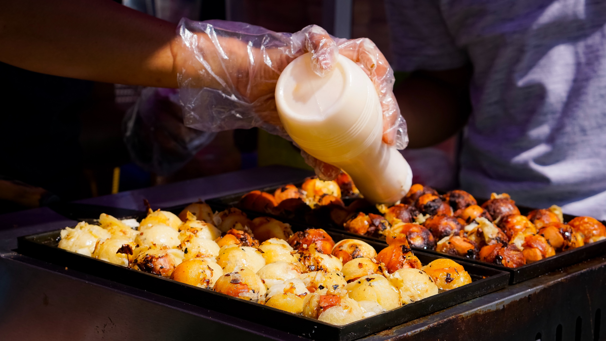

Takoyaki
Takoyaki is a classic favorite in Osaka. Simple ingredients and extremely tasty! They are ball shaped dumplings made with a batter or eggs and flour filled with sliced octopus, ginger, spring onions, and tempura crumbs. After they have been cooked, these little beauties are pasted with a sweet brown sauce, and then topped with powdered nori seaweed, dried bonito flakes and mayonnaise. They are usually sold from street side stalls which are abundunt in Osaka. Especially in Dotonburi.
Okonomiyaki

Okonomiyaki is a scrumptious pancake made from eggs, flour, grated yam and shredded cabbage. You could add a plethura of things into these ingredients: pork, squid, shrimp, chesse, tomato, etc. In fact, the name "Okonomiyaki" roughly translates to "grilled stuff you like" in Japanese. Similar to Takoyaki, this dish is also topped with brown sauce, mayonnaise, powdered nori seaweed and bonito flakes. As one of the most poular foods in Osaka, you can find this delectable dish almost anywhere but most notably as a signature dish at a restaurant called Mizuno in Dotunburi. Here the cooks will prepare your pancake in front of you on a large iron griddle.
Fugu

Fugu or blowfish is a special delicacy usually eaten raw. This dish is famous for being poisonous if prepared by an unskilled hand. But you can put your fears for danger torest as you will find that chefs are trained for three years before preparing this delectably dangerous dish. The standard way to serve fugu is as thin slices of sashimi arranged in a foral pattern with a side of ginger and wasabi. You can also bake dried fugu fins and serve them in hot sake as a dish called hire-zake. The most common place to find fugu in Osaka is at a restaurant called Zuboraya.
Kushikatsu

Kushikatsu are kebabs of meat, seafood or vegetables which are breaded and deep fried until golden and crispy before served with a variety of dipping sauces and flavored salt. The typical items on a Kushikatsu menu range from pork, beef, shrimp, pumpkin and even quail eggs. Kushikatsu is a very popular dish in Osaka. It is believed to have originated at the Kushikatsu daruma restaurant in the Shinsekai district of Osaka in 1929. That restaurant is still open to this day so you can stop by and indulge if you are visiting Japan.